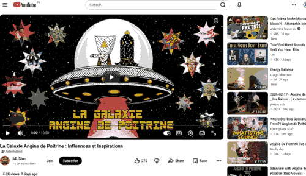

Angine de Poitrine — références & influences
Liste des groupes de musique et festivals cités dans la vidéo La Galaxie Angine de Poitrine, avec les influences et inspirations déclarées du groupe.
Made from : MUSinc 2 mai 2026 ▶ YouTubeLa Galaxie Angine de Poitrine : Influences et Inspirations